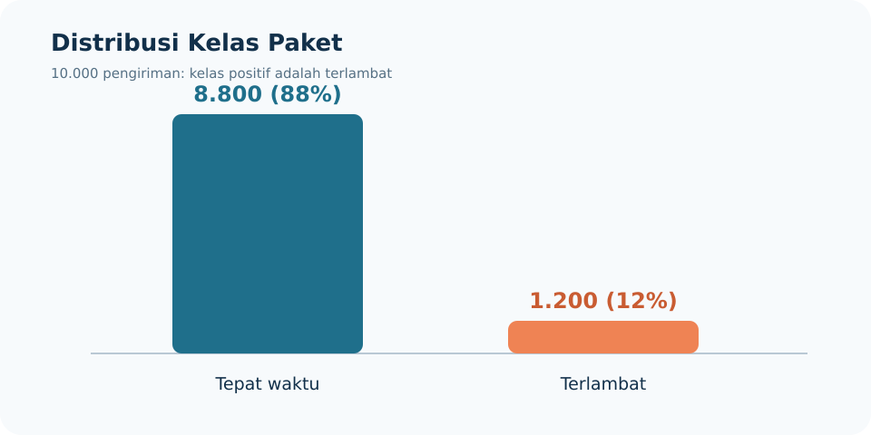
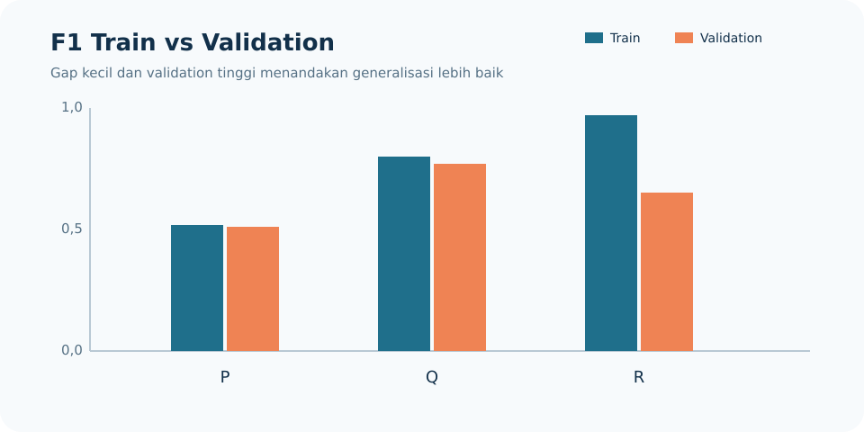
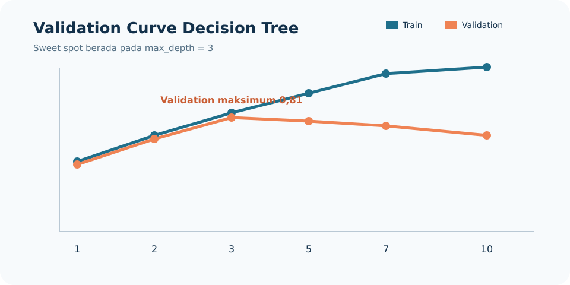
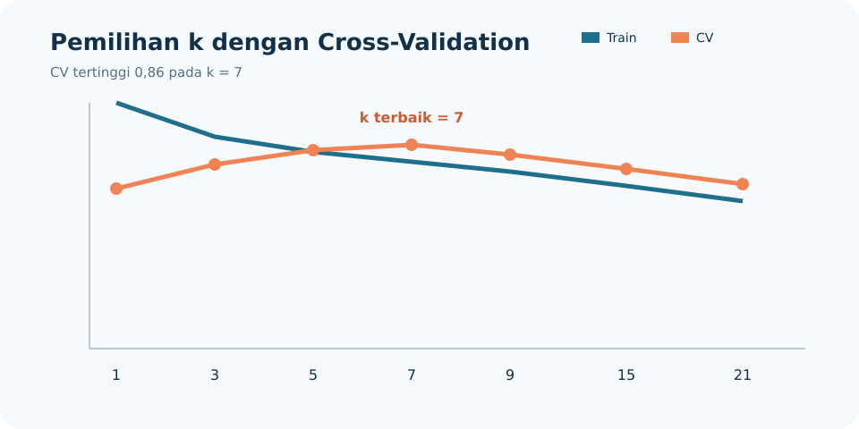

Pembahasan terstruktur, perhitungan tiga desimal, visualisasi, dan sitasi materi kuliah.

terlambat (kelas positif) atau tepat waktu (kelas negatif).Model yang selalu menebak tepat waktu menghasilkan:
Walaupun akurasinya 0,880, model tidak pernah menemukan paket terlambat, sehingga TP = 0, FN = 1.200, dan recall kelas terlambat = 0. Akurasi tidak layak menjadi metrik utama karena kelas mayoritas mendominasi hasil dan menyembunyikan kegagalan total pada kelas yang ingin dideteksi. Materi memberikan pola yang sama: model semua-kelas-mayoritas dapat memiliki akurasi tinggi tetapi recall kelas positif nol. [ML-P03, hlm. 17–19]
Kembali ke fase Business Understanding. Tim bisnis dan operasional harus menentukan definisi target yang terukur, misalnya terlambat jika paket diterima lebih dari satu hari setelah estimasi. Setelah definisi disepakati, label target perlu dibentuk ulang secara konsisten. Business Understanding memang bertugas menerjemahkan kebutuhan menjadi target dan metrik yang jelas. [ML-P02, hlm. 6–7]
tanggal_diterima dipakai sebagai fitur inputKembali ke Data Understanding untuk mengidentifikasi bahwa kolom tersebut hanya tersedia setelah paket sampai, kemudian ke Data Preparation untuk membuangnya dari fitur, membangun ulang pipeline, dan melatih serta mengevaluasi model kembali. Kolom tersebut merupakan target leakage karena memakai informasi masa depan. [ML-P02, hlm. 8–9, 18]
Rasio pembagian adalah 70% : 10% : 20%. Stratifikasi menjaga rasio kelas pada setiap subset. [ML-P02, hlm. 14–17]
| Subset | Tepat waktu | Terlambat | Total |
|---|---|---|---|
| Train (70%) | 0,70 × 8.800 = 6.160 | 0,70 × 1.200 = 840 | 7.000 |
| Validation (10%) | 0,10 × 8.800 = 880 | 0,10 × 1.200 = 120 | 1.000 |
| Test (20%) | 0,20 × 8.800 = 1.760 | 0,20 × 1.200 = 240 | 2.000 |
Fungsi setiap subset:

Gap dihitung dengan F1_train − F1_validation.
| Model | F1 train | F1 validation | Gap | Diagnosis |
|---|---|---|---|---|
| P | 0,520 | 0,510 | 0,010 | Keduanya rendah dan berdekatan: underfitting/high bias |
| Q | 0,800 | 0,770 | 0,030 | Skor relatif tinggi dengan gap kecil: generalisasi terbaik |
| R | 0,970 | 0,650 | 0,320 | Train sangat tinggi, validation jauh lebih rendah: overfitting/high variance |
Tindakan untuk P: tambah kapasitas model atau perbaiki fitur agar pola yang relevan dapat dipelajari. Tindakan untuk R: kurangi kompleksitas/beri regularisasi; alternatifnya tambah data train. Model yang dilanjutkan adalah Q, karena F1 validation tertinggi dengan gap kecil. Diagnosis ini mengikuti ciri high bias dan high variance pada learning curve. [ML-P02, hlm. 19–21]
Data terurut: 1, 2, 2, 3, 3, 4, 5, 18.
Dengan metode median dari masing-masing separuh data:
Nilai 18 kg adalah kandidat outlier karena 18 > 8,250. Nilai tersebut tidak boleh langsung dihapus. Periksa dulu apakah terjadi salah input/salah satuan. Jika paket 18 kg valid dan memang mungkin terjadi dalam operasi, nilainya sebaiknya dipertahankan atau ditangani dengan transformasi/metode robust karena menghapusnya dapat membuang fenomena penting. [ML-P03, hlm. 11–15]
Nilai jarak yang tersedia: 5, 8, 10, 12, 65.
Median dari data terurut 5, 8, 10, 12, 65 adalah 10,000 km.
Imputasi yang lebih tepat adalah median, karena distribusi miring akibat nilai 65 dan median lebih tahan terhadap nilai ekstrem. [ML-P03, hlm. 9]
Untuk paket 55 km:
Karena |3,333|>3, jarak 55 km merupakan kandidat outlier. Status kandidat tidak otomatis berarti nilai harus dihapus. [ML-P03, hlm. 14–15]
Pada data train: N = 7.000, K = 2, n_tepat_waktu = 6.160, dan n_terlambat = 840.
Perbandingannya:
Artinya, kesalahan pada satu paket terlambat diberi penalti sekitar 7,333 kali kesalahan pada satu paket tepat waktu. Dengan demikian model lebih memperhatikan kelas minoritas tanpa menggandakan atau menghapus data. [ML-P03, hlm. 22–23]
Diketahui:
SMOTE hanya diterapkan pada data train agar informasi sintetis dari kelas minoritas tidak masuk ke validation/test. Jika dilakukan sebelum split, sampel yang saling berkaitan dapat tersebar ke subset evaluasi dan menghasilkan data leakage serta skor yang terlalu optimistis. [ML-P03, hlm. 20–21, 24–25]
Total baris = 200, total terlambat = 50, dan total tepat waktu = 150. Karena setiap baris tabel memiliki total 100, frekuensi harapan untuk masing-masing baris adalah:
| Sel | O | E | (O−E)²/E |
|---|---|---|---|
| Ekonomi=Ya, Terlambat | 36 | 25 | 4,840 |
| Ekonomi=Ya, Tepat | 64 | 75 | 1,613 |
| Ekonomi=Tidak, Terlambat | 14 | 25 | 4,840 |
| Ekonomi=Tidak, Tepat | 86 | 75 | 1,613 |
Karena 12,907 > 3,840, H0 independensi ditolak pada α = 0,05. Ada hubungan signifikan antara layanan ekonomi dan keterlambatan, sehingga fitur layanan ekonomi layak dipertahankan. Chi-square membandingkan frekuensi observasi dengan frekuensi harapan; selisih yang makin besar mengindikasikan hubungan yang lebih kuat. [ML-P04, hlm. 14]
Rancangan preprocessing:
| Kelompok | Kolom | Perlakuan |
|---|---|---|
| Numerik biasa | berat_kg | SimpleImputer(strategy="median"), kemudian StandardScaler() |
| Numerik miring | jarak_km | imputasi median, transformasi log1p bila seluruh nilai nonnegatif, lalu RobustScaler() atau StandardScaler() |
| Nominal | kota_tujuan, jenis_layanan | imputasi modus, lalu OneHotEncoder(handle_unknown="ignore") |
| Ordinal | tingkat_prioritas | imputasi modus, lalu OrdinalEncoder dengan urutan rendah < sedang < tinggi |
| Timestamp | waktu_pemesanan | ekstrak fitur waktu, lalu buang timestamp mentah |
Dua fitur baru yang diusulkan:
jam_pemesanan, untuk menangkap pola keterlambatan berdasarkan jam sibuk atau jam operasional.is_akhir_pekan, bernilai 1 untuk Sabtu/Minggu dan 0 selainnya, untuk menangkap perbedaan kapasitas operasional akhir pekan.Kolom tanggal_diterima wajib dibuang, karena baru tersedia setelah paket sampai. Memakainya saat memprediksi keterlambatan berarti menggunakan informasi masa depan dan menimbulkan leakage. Timestamp memang sebaiknya diubah menjadi pola waktu, ColumnTransformer memberi jalur berbeda untuk numerik, nominal, dan ordinal, sedangkan fitur masa depan harus dibuang. [ML-P04, hlm. 8–9, 20, 23]
Node induk mempunyai 6 terlambat dan 14 tepat waktu:
Kandidat X — cuaca buruk di rute
Cabang Ya (4 terlambat, 1 tepat):
Cabang Tidak (2 terlambat, 13 tepat):
Kandidat Y — layanan ekonomi
Cabang Ya (4 terlambat, 6 tepat):
Cabang Tidak (2 terlambat, 8 tepat):
CART memilih X (cuaca buruk di rute) karena Gini tertimbangnya paling kecil, yaitu 0,253. Semakin kecil Gini, semakin homogen node hasil split. [ML-P05, hlm. 7–8]
Entropy induk:
Kandidat X
Kandidat Y
ID3 juga memilih X, karena Information Gain X = 0,276 lebih besar daripada Y = 0,035. Information Gain memilih split dengan penurunan entropy terbesar. [ML-P05, hlm. 9–12]
Untuk α = 0,004:
| Pohon | Perhitungan Cα(T) | Nilai |
|---|---|---|
| T1 | 0,11 + 0,004(22) | 0,198 |
| T2 | 0,15 + 0,004(8) | 0,182 |
| T3 | 0,23 + 0,004(3) | 0,242 |
Pohon terpilih adalah T2 dengan Cα = 0,182.
Untuk α = 0,025:
| Pohon | Perhitungan Cα(T) | Nilai |
|---|---|---|
| T1 | 0,11 + 0,025(22) | 0,660 |
| T2 | 0,15 + 0,025(8) | 0,350 |
| T3 | 0,23 + 0,025(3) | 0,305 |
Pohon terpilih adalah T3 dengan Cα = 0,305. Ketika α meningkat, penalti untuk banyak leaf makin besar sehingga pohon yang lebih sederhana lebih disukai. Dampaknya adalah bias cenderung naik dan variance cenderung turun. [ML-P05, hlm. 18–19]

Nilai validation tertinggi adalah 0,810 pada max_depth = 3, sehingga depth terbaik adalah 3.
Depth dipilih dari puncak performa validation sebelum gap melebar, bukan dari akurasi train tertinggi. [ML-P05, hlm. 20]
Data baru adalah q = (3, 5). Label data latih: D1 terlambat; D2 tepat waktu; D3 tepat waktu; D4 terlambat; D5 tepat waktu.
Rumus Euclidean:
| Data | Perhitungan | Jarak | Kelas | Bobot 1/d |
|---|---|---|---|---|
| D1 (4,6) | √[(3−4)²+(5−6)²] | 1,414 | Terlambat | 0,707 |
| D2 (6,9) | √[(3−6)²+(5−9)²] | 5,000 | Tepat waktu | 0,200 |
| D3 (0,1) | √[(3−0)²+(5−1)²] | 5,000 | Tepat waktu | 0,200 |
| D4 (9,13) | √[(3−9)²+(5−13)²] | 10,000 | Terlambat | 0,100 |
| D5 (3,17) | √[(3−3)²+(5−17)²] | 12,000 | Tepat waktu | 0,083 |
Tiga tetangga terdekat adalah D1, D2, dan D3.
Keputusan berubah, karena D1 yang terlambat jauh lebih dekat daripada D2 dan D3. Weighted KNN memang memberi pengaruh lebih besar pada tetangga yang dekat. [ML-P06, hlm. 4–7, 12]
Rumus Manhattan:
| Data | Jarak Manhattan | Kelas | Bobot 1/d |
|---|---|---|---|
| D1 | 2,000 | Terlambat | 0,500 |
| D2 | 7,000 | Tepat waktu | 0,143 |
| D3 | 7,000 | Tepat waktu | 0,143 |
| D5 | 12,000 | Tepat waktu | 0,083 |
| D4 | 14,000 | Terlambat | 0,071 |
Tiga tetangga terdekat tetap D1, D2, dan D3.
Jadi, urutan tiga tetangga dan kedua prediksi tidak berubah dari hasil Euclidean. Metrik Euclidean dan Manhattan memiliki rumus berbeda dan pada dataset lain dapat menghasilkan tetangga berbeda. [ML-P06, hlm. 6–8]

Rata-rata akurasi cross-validation tertinggi adalah 0,860 pada k = 7, sehingga k terbaik adalah 7.
k tidak dipilih dari akurasi train karena k = 1 dapat menghafal data train dan menghasilkan akurasi 1,000 tanpa menjamin generalisasi. Hyperparameter k harus dipilih menggunakan cross-validation pada data train. [ML-P06, hlm. 11]
KNN menghitung kedekatan langsung dari selisih nilai fitur. Jika skala fitur berbeda, fitur dengan rentang angka besar akan mendominasi jarak walaupun belum tentu paling penting. Misalnya, jarak_km dapat bernilai puluhan atau ratusan, sedangkan skor beban gudang mungkin hanya berada pada skala kecil; tanpa scaling, perubahan jarak akan mengalahkan kontribusi beban gudang.
Karena itu fitur perlu distandardisasi agar keduanya dibandingkan dalam satuan yang sebanding. Scaler harus di-fit hanya pada data train untuk menghindari leakage. [ML-P06, hlm. 9–10]
Kasus KirimCepat membutuhkan evaluasi yang berfokus pada kelas terlambat, preprocessing bebas leakage, serta validasi model yang mempertimbangkan imbalance dan generalisasi. Dari perhitungan yang diberikan, model Q paling layak diteruskan, cuaca buruk menjadi split Decision Tree terbaik, max_depth = 3 dan k = 7 menjadi pilihan berdasarkan validation/CV, sedangkan weighted KNN mengubah prediksi paket baru menjadi terlambat karena tetangga terdekat memiliki bobot dominan.